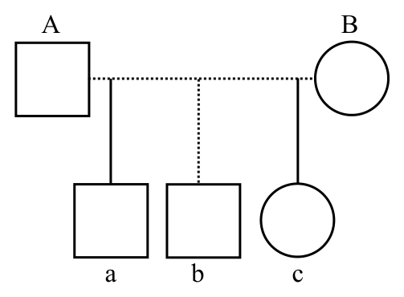

開卷有益 ／
護理師 ／ 精神科與社區衛生護理學 ／ 104 年第 1 次104 年第 1 次護理師精神科與社區衛生護理學試題與答案
這一頁是民國 104 年第 1 次護理師精神科與社區衛生護理學的整份歷屆試題，共 80 題，題目與標準答案出自考選部「國家考試試題及測驗式試題答案」開放資料，其中 80 題附有詳解。以下逐題列出題幹、選項與答案；要計時作答或記錄成績，請用線上練習。
考選部原始場次代碼：104030
線上作答這一科 →
全部 80 題
第 1 題
精神科病房的護理照顧模式，下列何者是運用行為模式（Behavioral Model）的範例？
（A） 懷舊團體治療（B） 對有嚴重幻聽的病人，給予現實的刺激，例如會談，聽音樂（C） 指導個案演練自我介紹（D） 協助個案找到存在的意義與價值答案：（C）
詳解與考點 正解：題眼在「行為模式」——行為模式以可觀察行為、練習與增強來建立適應行為；指導個案反覆演練自我介紹是直接塑造社交技能的行為介入，故選 C。
A：懷舊團體治療著重回顧生活經驗與整合意義，並非以行為演練為核心。
B：對幻聽病人提供現實刺激與轉移注意力，主要著眼於現實導向與症狀因應，未直接呈現行為模式的練習與增強結構。
D：協助尋找存在意義與價值屬存在主義取向，重點是生命意義，故非答案。
本題考點：行為模式（Behavioral Model）聚焦可觀察行為；行為演練（behavioral rehearsal）可建立社交技巧；增強（reinforcement）用以提高目標行為出現機率。
第 2 題
某主治醫師拿了臨床試驗用藥給護理師，告知給某病人使用，此時護理師提醒醫師應向病人解釋相 關資訊並請病人填寫臨床試驗同意書，對病人而言此護理師的功能為何？
（A） 教育者（B） 個案管理者（C） 諮商者（D） 代言者答案：（D）
詳解與考點 正解：題眼在「臨床試驗用藥」與「同意書」——護理師提醒醫師說明試驗資訊並取得病人知情同意，是保障病人自主決定與權益的代言行動，故選 D。
A：教育者著重提供健康知識與技能教學；本題的核心是確保病人有足夠資訊後能自主同意，而非一般衛教。
B：個案管理者主要整合服務、轉介與照護資源，並非本題保障受試權益的主要功能。
C：諮商者協助病人探索感受與因應問題；本題未以情緒探索為重點，故非答案。
本題考點：代言者（advocate）保障病人權益與自主；知情同意（informed consent）須在充分說明後由病人自願決定；臨床試驗（clinical trial）中的護理人員應協助維護受試者權益。
第 3 題
下列敘述，何者最符合沙利文（Sullivan）和佩普洛（Peplau）所提出的人際關係模式（Interpersonal Model）？
（A） 護理師透過關懷與支持，幫助病人體驗真誠互信的護病關係（B） 協助病人以能減輕焦慮且可被接受的行為取代偏差行為（C） 護理師引導病人發展轉移關係，經由解析病人的抗拒行為來確認問題所在（D） 指出病人語言和非語言溝通行為不一致之處，教導良好溝通原則，改善與他人之溝通答案：（A）
詳解與考點 正解：題眼在「沙利文和佩普洛」與「人際關係模式」——此模式把治療性護病關係視為促進成長與減輕焦慮的核心；以關懷、支持建立真誠互信關係最符合其精神，故選 A。
B：以可接受行為取代偏差行為，重點是行為改變與學習原則，較接近行為模式。
C：解析抗拒與轉移關係是心理分析取向的典型工作，故非答案。
D：辨識語言與非語言不一致並教導溝通原則，較偏向溝通技能訓練，未凸顯人際關係模式的治療關係核心。
本題考點：人際關係模式（Interpersonal Model）強調治療性關係（therapeutic relationship）；沙利文（Sullivan）重視人際經驗與焦慮；佩普洛（Peplau）將護病關係視為治療歷程。
第 4 題
一位被性侵的高中生，因重複出現自殺行為而入院，住院期間出現大小便失禁及兒童使用的語言模 式，此病人使用下列何種防衛機轉？
（A） 取代現象（displacement）（B） 退化現象（regression）（C） 壓抑作用（suppression）（D） 反向作用（reaction formation）答案：（B）
詳解與考點 正解：題眼在創傷後出現「大小便失禁」與「兒童使用的語言模式」——病人在壓力下退回較早發展階段的行為，是退化現象，故選 B。
A：取代現象是把原本對某人或事的情緒轉向較安全的目標，不能解釋幼兒化語言與失禁。
C：壓抑作用是有意識地暫時不去想令人痛苦的內容，並非表現出早期發展行為。
D：反向作用是以與內在衝動相反的態度或行為表現，與本題不符。
本題考點：退化現象（regression）是壓力下退回早期發展行為；取代現象（displacement）為情緒轉向較安全目標；反向作用（reaction formation）以相反行為防衛不可接受的衝動。
第 5 題
運用行為修正減少病人隨意碰觸他人身體的行為，而與病人訂定行為契約，行為契約的內容應該包 括下列那些？①問題行為次數的紀錄 ②增強物的種類 ③處罰物的種類 ④病人的姓名和同意後 的簽名
（A） ①②③（B） ②③④（C） ①③④（D） ①②④答案：（D）
詳解與考點 正解：題眼在「行為契約」與組合①②④——行為修正的契約須界定可觀察的問題行為及其紀錄方式、約定增強物，並由病人知情同意簽名；①②④皆成立，故選 D。
A：①②③包含③處罰物種類。行為契約著重正向增強與明確目標，不以約定處罰作為必要內容，故非答案。
B：②③④同樣含③，缺少①問題行為紀錄，無法客觀追蹤目標行為，故非答案。
C：①③④含③且漏②增強物，故非答案。這是最強誘答——它保有紀錄與簽名兩項正確要素，但把行為修正的正向增強錯換成處罰。
本題考點：行為契約（behavioral contract）需明定目標或問題行為與紀錄方式；正向增強（positive reinforcement）是行為修正的重要策略；知情同意（informed agreement）以病人理解並簽名確認契約內容。
第 6 題
下列關於情感轉移（Transference）描述的內容何者正確？
（A） 護理師將王婆婆病人視作自己過世的母親，每日烹煮母親生前愛吃的食物給王婆婆（B） 病人斥責護理師如同對自己的女兒一般（C） 護理師對王先生常感到不耐煩，他總是讓她想到自己酗酒的父親（D） 護理師常會想要幫助單親的林小姐照顧她的小孩和她的雙親答案：（B）
詳解與考點 正解：題眼在「病人」把護理師當作「自己的女兒」般斥責——病人將過去重要關係的情感與互動模式投向治療者，是情感轉移，故選 B。
A、C、D：三者皆由護理師因病人聯想到自己母親、父親或家庭處境而產生特殊反應，屬反轉移，而非病人對護理師的情感轉移，故非答案。
本題考點：情感轉移（transference）是病人將過去關係的情感投向治療者；反轉移（countertransference）是治療者把個人未處理的情感帶入護病關係；辨識兩者的關鍵是情感由病人或護理人員哪一方發出。
第 7 題
下列何者不是評估病人定向力的適當問句？
（A） 你的病房床號是幾號（B） 你今天早餐吃些什麼（C） 今天是國曆幾月幾日（D） 白天主要照顧你的護理師叫什麼名字答案：（B）
詳解與考點 正解：題眼在「不是評估定向力」——定向力評估人、時、地等當下定位能力；早餐吃什麼主要測試近期記憶，不能直接評估定向力，故 B 為應選項。
A：詢問病房床號可了解病人對所在位置的定向，故非答案。
C：詢問國曆日期評估時間定向，故非答案。
D：詢問主要照顧護理師姓名可評估對周遭人物的定向，故非答案。
本題考點：定向力（orientation）包括對人、時、地的辨識；近期記憶（recent memory）可用近期事件或餐食內容探問；精神狀態檢查（mental status examination）須區分定向力與記憶力。
第 8 題
鈉離子滯留於神經細胞內的濃度較一般人高出 200%與下列何種疾患最有相關？
（A） 焦慮性疾患（B） 雙極性疾患（C） 解離性疾患（D） 身體性疾患答案：（B）
詳解與考點 正解：官方答案為 B；題眼在「神經細胞內鈉離子滯留」與「200%」——此為舊題將電解質異常假說連結雙極性疾患的敘述，故依官方答案選 B。惟此數值與疾病的直接因果關係並非現行臨床診斷判準，不能據此單一指標診斷雙極性疾患。
A：焦慮性疾患以過度焦慮、恐懼與生理喚起為核心，題幹所述舊式鈉離子假說並非其判別線索。
C：解離性疾患的核心是記憶、意識、身分或知覺整合受影響，非以此鈉離子描述為主。
D：身體性疾患以身體症狀與其相關認知、情緒及行為困擾為特徵，亦不以題幹所列生物學說判定。
本題考點：雙極性疾患（bipolar disorder）以躁期、輕躁期與憂鬱期病程評估為核心；生物學假說（biological hypothesis）可作理論背景，不等同診斷標準；電解質（electrolyte）數值應結合臨床情境判讀。
第 9 題
臨床上 Valproate（Depakine）藥物常用於雙極性疾病，有關 Valproate 之主要藥理作用機轉，下列何 者正確？
（A） 選擇性抑制正腎上腺素及多巴胺再吸收（B） 抑制興奮性 GABA，並增加抑制性 GABA 之活性（C） 作用於 GABA 接受器，並抑制神經細胞的傳導（D） 阻斷鈉離子通道接受器，並抑制神經傳導物質答案：（B）
詳解與考點 正解：官方答案為 B；題眼在「Valproate」與「主要藥理作用機轉」——其臨床重點為提升抑制性 GABA 活性並降低神經元過度興奮，因此依選項意旨選 B。惟選項所稱「興奮性 GABA」用語不精確，GABA 通常是抑制性神經傳導物質；實際機轉亦涉及多重離子通道與神經傳導調節；判準落在「提升 GABA 抑制作用」這個方向，四個選項中僅 B 指向此方向。
A：選擇性抑制正腎上腺素及多巴胺再吸收是抗憂鬱藥物類別的典型作用方向，非 Valproate 的主要描述。
C：僅稱作用於 GABA 接受器並抑制神經傳導，過度簡化且未正確表達其提升 GABA 抑制性作用的重點。這是最強誘答——它也提到 GABA，但把調節 GABA 活性的概念誤寫成直接單一受體作用。
D：Valproate 可影響鈉離子通道，但「阻斷鈉離子通道接受器」並非正確的藥理表述，且不足以涵蓋本題所問主要機轉。
本題考點：丙戊酸鹽（valproate）可提升 GABAergic inhibition；情緒穩定劑（mood stabilizer）用於雙極性疾患的情緒期控制；藥理機轉（mechanism of action）應區分離子通道與受體，並避免把 GABA 誤稱為興奮性傳導物質。
第 10 題
住院病人表示：「今天要去接受行政院十大傑出青年表揚。」請問這是何種症狀？
（A） 色情妄想（B） 誇大妄想（C） 迫害妄想（D） 嫉妒妄想答案：（B）
詳解與考點 正解：題眼在病人堅信自己將接受「十大傑出青年表揚」——內容把自身能力、身分或成就誇大到與現實不相稱，符合誇大妄想，故選 B。
A：色情妄想涉及他人對自己有愛慕或性方面意圖的錯誤信念，與表揚成就無關。
C：迫害妄想是堅信自己遭跟蹤、傷害、陷害或監控，本題沒有威脅內容。
D：嫉妒妄想是無根據地認定伴侶不忠，故非答案。
本題考點：誇大妄想（grandiose delusion）為不合現實地誇大能力、地位或成就；迫害妄想（persecutory delusion）以遭害信念為核心；妄想（delusion）是無法以證據修正的錯誤信念。
第 11 題
下列有關知覺障礙的敘述，何者正確？
（A） 知覺障礙是指對現實環境做了錯誤的推論，同時深信不疑（B） 無外界刺激，但個人卻有知覺產生稱之為錯覺（C） 器質性腦症候群病人的知覺障礙最常是聽幻覺（D） 失真感是主觀的感受，像在演戲，覺得四週環境是不真實的答案：（D）
詳解與考點 正解：題眼在「像在演戲」與「四週環境不真實」——失真感描述個人主觀覺得周遭世界不真實或疏離，符合去現實感，故選 D。
A：對現實環境作錯誤推論且深信不疑是妄想，屬思考內容障礙，不是知覺障礙。
B：沒有外界刺激卻產生知覺是幻覺；錯覺則是把真實存在的外界刺激錯誤解讀，故非答案。
C：器質性腦症候群的知覺異常較常見視幻覺；選項稱最常是聽幻覺不正確。這是最強誘答——聽幻覺確是精神科常見症狀，但要先看病因；器質性腦功能障礙的典型知覺表現不同。
本題考點：去現實感（derealization）是環境不真實的主觀感受；幻覺（hallucination）在無外界刺激下產生知覺；錯覺（illusion）是對真實刺激的錯誤知覺。
第 12 題
下列何項措施是團體治療結束期領導者協助成員最適合的作法？
（A） 將未完成的議題轉介到下一個團體治療中執行（B） 鼓勵成員表達分離的感受（C） 允許團體結束後成員自行聚會（D） 鼓勵成員針對尚未解決的議題深入討論答案：（B）
詳解與考點 正解：題眼在「團體治療結束期」——結束會喚起依附、失落與分離感，領導者應協助成員辨識並表達這些感受，以完成結束歷程，故選 B。
A：未完成議題是否轉介須依個別需要評估，但不是結束期對所有成員最優先的共同工作。
C：允許成員自行聚會可能模糊治療界線，不能取代對結束感受的處理。
D：深入討論未解決議題較適合工作期；結束期應先統整經驗並處理分離，故非答案。
本題考點：團體結束期（termination phase）需處理離別與失落感；團體領導（group leadership）協助成員統整收穫與表達情緒；治療界線（therapeutic boundaries）在團體結束後仍應維持清楚。
第 13 題
有關認知行為治療之敘述，下列何者正確？①運用學習理論，解決生活上的問題 ②主要在於探討 個案童年早期的經驗，以修復其心理創傷 ③可促進健康的因應行為 ④可協助個案克服生活上的 困難及促進其成長
（A） ①②③（B） ①③④（C） ①②④（D） ②③④答案：（B）
詳解與考點 正解：題眼在「認知行為治療」與組合①③④——認知行為治療運用學習與認知重建技巧處理當前問題、建立健康因應，並提升面對生活困難的能力；①③④成立，故選 B。
A：①②③包含②。深入探討童年早期經驗並修復心理創傷是心理動力取向較典型的工作，非認知行為治療主要焦點，故非答案。
C：①②④同樣含②，故非答案。
D：②③④含②且漏①，故非答案。這是最強誘答——③④的治療目標正確，但只要納入②就把當前問題導向的認知行為治療混同為童年經驗取向。
本題考點：認知行為治療（cognitive behavioral therapy, CBT）聚焦當前想法、情緒與行為的連結；認知重建（cognitive restructuring）協助修正不適應思考；因應技巧（coping skills）可用於處理生活困難。
第 14 題
小蘭，23 歲，診斷：重度憂鬱症，住院治療後症狀仍未改善，出現咬舌自盡、拒吃、拒喝等強烈自 殺意圖，請問，為了預防自殺行為的發生，臨床上會採用下列那一種治療方法可達到快速的療效？
（A） 音樂治療（B） 電氣痙攣療法（C） 睡眠剝削療法（D） 光線治療法答案：（B）
詳解與考點 正解：題眼在「咬舌自盡、拒吃、拒喝」與「強烈自殺意圖」——這是生命安全優先的急症情境；對嚴重憂鬱症且需快速改善時，電氣痙攣療法可作為臨床治療選項，故選 B。
A：音樂治療可作為支持性介入，但無法取代對立即自殺風險的快速處置。
C：睡眠剝削療法並非處理強烈自殺意圖的標準快速治療；它看似能短期影響情緒，卻不具本題所需的安全與迅速穩定效果。
D：光線治療主要用於特定季節型情緒困擾等情境，無法優先處理題幹的高度自殺風險。
本題考點：自殺風險（suicide risk）須以生命安全為第一優先；電氣痙攣療法（electroconvulsive therapy, ECT）可用於嚴重憂鬱症且需迅速改善的臨床情境；安全防護（safety protection）不可被支持性治療取代。
第 15 題
團體成員表示：「自己曾經被其他同學毆打，所以覺得自己是最沒有用的人」，護理師詢問參與團 體的其他成員：「團體中有那些人也有類似的經驗？」此項技巧最可以促進下列何種團體治療因子 的產生？
（A） 希望灌注（Instillation of hope）（B） 模仿行為（Imitative or identification behavior）（C） 普遍性（Universality）（D） 利他性（Altruism）答案：（C）
詳解與考點 正解：題眼在護理師邀請「有類似經驗」的成員回應——讓成員發現痛苦經驗並非只有自己承受，可減少孤立感，正是團體治療的普遍性因子，故選 C。
A：希望灌注是成員看見改善可能或他人成長經驗而產生希望，本題主要著重共同經驗的發現。
B：模仿行為是觀察並學習他人適應行為，題幹未要求示範或仿效。
D：利他性是透過幫助他人而獲得價值感，與辨識共同遭遇不同。
本題考點：普遍性（universality）使成員了解困擾並非孤立；希望灌注（instillation of hope）來自對改變可能的看見；利他性（altruism）指成員藉由幫助他人獲得價值。
第 16 題
下列有關思覺失調症（原精神分裂症）的描述，何者正確？
（A） 男性發生率明顯高於女性（B） 病人情感平淡、退縮與正腎上腺素減少有關（C） 其發病與遺傳因素較無關聯（D） 其正性症狀與血清素過高有關答案：（B）
詳解與考點 正解：官方答案為 B；題眼在「情感平淡、退縮」——此題將陰性症狀與正腎上腺素減少的舊式生物胺假說連結，故依官方答案選 B。惟思覺失調症的病因為多因素，現行臨床不以單一正腎上腺素變化判定情感平淡或退縮，故本題只能作為舊題理論辨識。
A：思覺失調症的整體發生率並非男性明顯高於女性；性別差異較常反映發病年齡與病程表現，故非答案。
C：遺傳易感性是重要風險因素之一，稱與遺傳較無關聯不正確。
D：正性症狀的生物學假說以多巴胺功能失調較具代表性；只以血清素過高概括不正確。這是最強誘答——血清素確與部分藥物作用及症狀調節相關，但不能取代較核心的多巴胺失調概念。
本題考點：思覺失調症（schizophrenia）包含正性症狀與陰性症狀；陰性症狀（negative symptoms）可見情感平淡與社會退縮；遺傳易感性（genetic vulnerability）與神經傳導物質假說皆屬多因素病因的一部分。
第 17 題
王先生為思覺失調症（原精神分裂症）個案，近日出現語無倫次、答非所問；情感表露減少；行為怪 異；聽幻覺等症狀，依布洛伊勒（Bluer）所提出之原發性症狀（4As），王先生符合其中幾項？
（A） 1 項（B） 2 項（C） 3 項（D） 4 項答案：（B）
詳解與考點 正解：題眼在「語無倫次、答非所問」「情感表露減少」「行為怪異」與「聽幻覺」——要逐一對照布洛伊勒的 4As。語無倫次、答非所問屬聯想障礙（association disturbance）；情感表露減少屬情感障礙（affective disturbance）。自閉傾向是退縮於內在世界，不能只憑「行為怪異」判定；矛盾意志也未出現。聽幻覺屬知覺障礙，並非 4As。故符合 2 項，選 B。
A：僅算 1 項忽略了題幹同時給出的聯想與情感兩組線索，故非答案。
C：算為 3 項，是把「行為怪異」直接等同自閉傾向。它看似接近思覺失調症的怪異表現，但自閉傾向的判準是脫離現實、退縮於內在世界，題幹沒有這項描述。
D：算為 4 項，是把「聽幻覺」也列入 4As；幻覺是知覺障礙，不能納入此分類。
本題考點：布洛伊勒 4As（Bleuler's four As）包括聯想障礙、情感障礙、自閉傾向與矛盾意志；幻覺（hallucination）屬知覺障礙；怪異行為（bizarre behavior）不可逕自當作自閉傾向。
第 18 題
王小姐診斷為思覺失調症（原精神分裂症），近日出現無人在旁時，側身傾聽，自言自語並揮舞雙 手，此時王小姐最有可能出現的表徵是？
（A） 知覺感受改變（B） 思考內容變異（C） 情感表現平淡（D） 社會互動退縮答案：（A）
詳解與考點 正解：題眼是「無人在旁時側身傾聽、自言自語並揮舞雙手」——這些可觀察行為指向病人正在回應不存在的聲音或影像，也就是幻覺。幻覺是沒有外在刺激卻產生感覺經驗，屬知覺感受改變，故選 A。
B：思考內容變異著重妄想等固定而不合現實的信念；題幹未描述王小姐相信某種錯誤內容，而是呈現回應幻覺的行為，故非答案。
C：情感表現平淡是表情、聲調與情緒反應減少；自言自語與揮手不能據此判定情感平淡。
D：社會互動退縮是減少與他人接觸或參與；本題關鍵是無外人在場仍在回應內在知覺，並非單純退縮。
本題考點：幻覺（hallucination）是知覺感受改變；妄想（delusion）屬思考內容變異；評估時可由病人疑似回應內在刺激的行為辨識幻覺。
第 19 題
游先生今天預抽鋰鹽（Lithium carbonate）濃度，他詢問大夜班護理師，因為吃鋰鹽會有噁心、嘔吐 副作用，所以想和早餐一起吃以減少噁心感，護理師回應下列何者為佳？
（A） 答應游先生的要求，給予鋰鹽提早吃（B） 「鋰鹽不能提早吃，只能早上 9 點吃」（C） 「因為要抽血檢查血中濃度，要等抽完血才可以吃鋰鹽」（D） 「你去跟醫師說，請醫師把鋰鹽時間提早」答案：（C）
詳解與考點 正解：題眼在「預抽鋰鹽濃度」與「想提早服用」——血中藥物濃度必須在既定抽血時點取得，若先服藥會改變檢體所反映的濃度，影響判讀。因此應先完成抽血，再依醫囑給予鋰鹽，故選 C。實際抽血時點與給藥時程須依醫囑安排；本題的判準是抽血前不自行提早服藥。
A：提早給藥雖可回應噁心不適，卻會干擾預定濃度檢查，違反檢體正確性原則，故非答案。
B：只說不能提早吃、且自行指定早上 9 點，沒有說明抽血與給藥的關係，也不應由護理人員杜撰固定時刻。
D：請病人自行找醫師改時間，未先處理當下抽血前的給藥原則。這是最強誘答——調整處方時間可能需要醫囑，但本題眼前最直接的安全作法仍是先抽血再給藥。
本題考點：治療藥物監測（therapeutic drug monitoring）須維持既定採檢與給藥關係；鋰鹽（lithium carbonate）常見腸胃不適，護理人員須兼顧副作用處理與血中濃度檢體正確性。
第 20 題
張先生，68 歲，近年因意外連續喪失二子後出現情緒低落，有自殺意念、拒食等症狀，經送醫後診 斷為重鬱症，入院第 1 週，下列那一項護理措施最適宜？
（A） 安排張先生協助照顧自我功能較差的病人（B） 鼓勵張先生參加團體治療活動以增加自信心（C） 鼓勵張先生參與職能治療活動，並規劃出院的工作（D） 定時探視陪伴張先生答案：（D）
詳解與考點 正解：題眼在「入院第 1 週」「有自殺意念、拒食」與重鬱症急性期——生命安全與基本生理需求優先於自信、工作或助人角色。定時探視陪伴可持續評估自殺風險、提供安全感並促進進食與治療合作，故選 D。
A：安排照顧功能較差的病人要求張先生承擔照顧責任，忽略其目前情緒低落與安全風險，時機不當。
B：團體治療可作為後續介入，但急性期先要確認自殺安全與基本需求；直接以增加自信為目標跳過優先序。
C：職能治療與出院工作規劃偏向功能恢復期目標，不能取代入院初期的密切陪伴與風險評估。這是最強誘答——它的方向是促進復原，但錯在把復健期介入放到急性安全需求之前。
本題考點：Maslow 需求層次（Maslow's hierarchy of needs）先處理安全與生理需求；重鬱症急性期護理（acute depression nursing）要持續評估自殺意念、陪伴並支持基本生活功能。
第 21 題
下列針對低落性情感疾患（Dysthymic disorder）之診斷描述，何者正確？
（A） 此疾患發作於 25 歲以前可註明是早期發作（B） 兩年內合併有重鬱症發作（C） 心情低落的日子較正常為多，且時間超過兩年（D） 主要是藥物導致心情低落答案：（C）
詳解與考點 正解：題眼是「低落性情感疾患」的長期、持續性低落心情——其核心不是單次重鬱發作，而是低落日子多於正常日子且持續超過 2 年，故選 C。
A：早期發作的分界不是題述的 25 歲以前；此敘述不符合該診斷的發作型態判準。
B：依本題採用的舊制診斷準則，最初 2 年內不得出現符合完整準則的重鬱發作，「兩年內合併有重鬱症發作」正好與此限制相反，故非答案。
D：由物質或藥物直接造成的心情低落應另考量物質或藥物誘發的情緒障礙，不能作為本疾患的主要定義。
本題考點：低落性情感疾患（現稱持續性憂鬱症）以長期低落心情為核心，病程須超過 2 年；舊制的鑑別重點是最初 2 年內不得有完整的重鬱發作，並須排除物質或藥物誘發的情緒症狀。
第 22 題
吳小姐，憂鬱症，住院 1 星期來總是覺得疲倦、胃口差，多躺床，1 年前曾有自殺紀錄，下列最合宜 的護理措施為何？
（A） 鼓勵獨處以獲得適當的休息（B） 鼓勵參與病房動態且競爭性活動，以紓解內心焦慮（C） 鼓勵維持規律的生活作息（D） 24 小時隨時監視其言行以預防自殺答案：（C）
詳解與考點 正解：吳小姐的憂鬱、疲倦、胃口差與臥床是生理功能及日常活動下降的訊號，既往自殺紀錄則要求持續評估目前的自殺意念、計畫與可近性。在題幹未呈現立即自傷意圖或行為時，優先以（C）鼓勵維持規律生活作息，重建睡眠、活動與進食結構；安全評估仍不可中斷，故選 C。
A：鼓勵獨處可能加重退縮，也減少觀察情緒與安全狀態的機會，與憂鬱病人的支持性照護不符。
B：病房活動宜依病人的精力與耐受度漸進安排；動態且競爭性的活動可能增加壓力或挫折，並非此時的優先措施。
D：24 小時持續監視適用於經評估有當前高度自殺風險的情況，不能只依 1 年前的紀錄直接套用。這是最強誘答——安全確實優先，但判準是「現在的自殺風險」而非單一既往病史；本題已給的立即需求是恢復基本生活功能。
本題考點：自殺風險評估（suicide risk assessment）——出現目前意念、計畫、意圖或可近性時，安全措施優先於其他目標；行為活化（behavioral activation）——憂鬱合併退縮與作息失序時，以可達成的規律活動、睡眠與進食安排逐步恢復功能；護理優先序（nursing priorities）——先處理安全與生理需求，再安排較高層次的心理社會目標。
第 23 題
葛小姐，正處於憂鬱期，經常掉眼淚的對護理師說自己很渺小，做錯很多事，對不起家人，整日臥 床不肯參加活動，下列護理措施何者最適合？
（A） 傾聽她的感受（B） 給予口頭肯定她絕對是個有價值的人（C） 以半強迫方式鼓勵她加入團體活動（D） 採用面質法引導她正向思考答案：（A）
詳解與考點 正解：題眼在「自己很渺小、對不起家人、整日臥床」——憂鬱期病人正表達罪惡感、無價值感與退縮，第一步應以治療性溝通接住其主觀感受。傾聽能傳達接納並提供進一步評估自殺意念與需求的基礎，故選 A。
B：直接說「絕對有價值」雖出於鼓勵，卻否定病人當下感受，容易使病人覺得未被理解，故非答案。
C：半強迫加入團體活動忽略她目前低精力與退縮程度，應先建立關係並採小步驟、可負荷的活動安排。
D：面質法要求病人檢視矛盾，較可能增加防衛或壓力，不是憂鬱期優先的溝通方式。
本題考點：治療性傾聽（therapeutic listening）先理解與反映病人感受；憂鬱症的罪惡感與無價值感（guilt and worthlessness）不可用空泛保證否定；活動安排採漸進原則（graded activity）。
第 24 題
下列對「反映（Reflection）」溝通技巧的描述，何者較適切？
（A） 可以反映出個案隱含未現的想法（B） 是同理心的技巧（C） 可以解決個案內在的感覺（D） 適當的運用反映技巧就不會引起個案的防衛心答案：（A）
詳解與考點 正解：題眼在「反映」這項治療性溝通技巧——護理人員將個案已表達的感受或話語加以回映，可協助其覺察語句中隱含、尚未清楚說出的想法與感受，故選 A。
B：同理心是理解並傳達對方內在經驗的較廣概念；反映可支持同理，但不能把兩者完全等同。
C：反映協助個案探索感覺，不能由護理人員替個案「解決」內在感覺，故非答案。
D：即使技巧運用適當，個案仍可能因內容敏感而出現防衛；保證不會引起防衛是過度推論。
本題考點：反映（reflection）是回映個案感受或隱含意義以促進自我覺察；同理（empathy）與問題解決（problem solving）是相關但不同的治療性溝通概念。
第 25 題
林先生對公司的老闆作風極度不滿，在同事面前不斷批評老闆，但看到老闆時卻畢恭畢敬噓寒問暖， 林先生使用的防衛機轉，下列何者正確？
（A） 投射作用（projection）（B） 否認作用（denial）（C） 反向作用（reaction formation）（D） 合理化作用（rationalization）答案：（C）
詳解與考點 正解：題眼是林先生內在「極度不滿」與面對老闆時「畢恭畢敬」的相反表現——把不能接受或不被允許表達的情感，轉成相反態度以降低焦慮，正是反向作用，故選 C。
A：投射是把自己不能接受的想法或情感歸於他人；題幹沒有把不滿說成老闆或同事的想法。
B：否認是否認痛苦事實或感受的存在；林先生私下明確表達不滿，並未否認它。
D：合理化是以看似合理的理由解釋行為或失敗，題幹沒有提出理由。
本題考點：反向作用（reaction formation）以相反行為處理不可接受情感；投射（projection）是歸因於他人；否認（denial）是否認現實或感受。
第 26 題
簡短智能評估表（mini-mental status examination, MMSE）為常用的認知功能評估量表，下列何者不 是 MMSE 的評估重點？
（A） 記憶力（B） 定向感（C） 價值觀（D） 計算力答案：（C）
詳解與考點 正解：題眼是 MMSE 的用途為篩檢認知功能——它評估定向感、記憶、注意與計算、語言及視覺建構等項目；價值觀屬個人的信念與判斷取向，並非 MMSE 的評估重點，故選 C。
A：記憶力是 MMSE 的認知評估項目，故非答案。
B：定向感用以了解時間、地點等認知定向，是 MMSE 的重點之一。
D：計算力反映注意與計算能力，也是 MMSE 的評估面向。
本題考點：簡短智能評估表（Mini-Mental State Examination, MMSE）用於認知篩檢；定向感（orientation）、記憶（memory）與注意計算（attention and calculation）是核心面向；價值觀（values）需以其他病史與心理社會評估了解。
第 27 題
黃先生在公眾場合說話或用餐會感到窘迫不安，覺得大家都在嘲笑他，因而常常退縮在家，逃避參 加公眾活動，黃先生最有可能的診斷為何？
（A） 恐慌症（panic disorder）（B） 社交畏懼症（social phobia）（C） 廣泛性焦慮症（generalized anxiety disorder）（D） 強迫症（obsessive compulsive disorder）答案：（B）
詳解與考點 正解：題眼是「公眾場合說話或用餐」時害怕被嘲笑，因而逃避——焦慮明確限於可能被他人檢視或評價的社交情境，符合社交畏懼症，故選 B。
A：恐慌症以反覆突發的強烈恐慌發作與對再發的擔憂為主，題幹未描述突發發作。
C：廣泛性焦慮症是對多種生活事件持續、難控制的過度擔憂；本題焦慮集中在社交評價。
D：強迫症的核心是侵入性強迫思考與重複強迫行為，與害怕公開受評不同。
本題考點：社交焦慮症（social anxiety disorder/social phobia）核心是害怕負面評價與逃避社交情境；恐慌症（panic disorder）看突發恐慌發作；廣泛性焦慮症（generalized anxiety disorder）看跨情境的持續擔憂。
第 28 題
有關阿茲海默氏症（Alzheimer's Disease）發病原因之敘述，下列何者正確？①腦部「乙醯膽鹼激素 （acetylcholine）」分泌過量 ②有家族遺傳傾向 ③過去曾有腦損傷 ④年齡與發病率成正比
（A） ①②④（B） ①②③（C） ①③④（D） ②③④答案：（D）
詳解與考點 正解：題眼在阿茲海默氏症的病因組合——逐項判斷：①不成立，該病與膽鹼性神經傳導功能下降有關，不是乙醯膽鹼分泌過量；②家族遺傳傾向可增加風險；③既往腦損傷是相關風險因子；④年齡增加與發病率上升相關。因此成立的是②③④，故選 D。
A：含①，將乙醯膽鹼的方向判反，故非答案。
B：含①，錯在同樣把膽鹼性功能描述為分泌過量。
C：含①，雖有③④兩項合理，仍因包含錯誤子敘述不能成立。
本題考點：阿茲海默氏症（Alzheimer's disease）與膽鹼性神經傳導下降（cholinergic deficit）有關；年齡（age）、家族史（family history）及腦損傷（brain injury）是風險相關線索；組合題須先逐項排除錯誤敘述。
第 29 題
對於初期失智症患者的照顧原則，下列何者最適宜？
（A） 儘量安排不同的照護人員，以增加病人對於人的定向感（B） 採用開放式問句讓患者表達想法（C） 鼓勵適當運動，例如：體操或太極拳（D） 協助學習新事物增強認知功能答案：（C）
詳解與考點 正解：題眼在「初期失智症」——照護要在安全下維持既有功能、規律生活與社會參與。適當運動如體操或太極拳可維持身體活動、平衡與日常功能，且可依能力調整，故選 C。
A：頻繁更換照護人員會增加辨識與適應負擔；應維持一致、熟悉的人員與環境以支持定向感。
B：開放式問句需要較多組織與表達能力，初期病人較適合清楚、一次一事的簡短問句，故非答案。
D：要求學習新事物可能造成挫折；照護重點是保留熟悉技能與提供適量刺激。這是最強誘答——認知刺激方向看似正確，但錯在把「新學習」當成主要目標，忽略失智症病人需要熟悉與成功經驗。
本題考點：失智症照護（dementia care）強調熟悉環境與一致性；功能維持（function maintenance）可透過個別化運動；溝通（communication）採簡短、具體、一次一事的方式。
第 30 題
有關注意力缺失過動症患童的遊戲與生活安排，下列敘述何者不適宜？
（A） 安排感覺統合治療（B） 強調專注力訓練的靜態活動（C） 選擇活動量不高的玩伴（D） 安排不具攻擊性的活動答案：（B）
詳解與考點 正解：題眼在「注意力缺失過動症」與「不適宜」——患童活動安排要把能量導向安全、結構化且可短暫完成的活動，再以逐步方式培養專注。強調長時間靜態專注訓練超出其注意維持能力，容易累積挫折，故 B 為應選項。
A：感覺統合相關活動可依個別評估納入計畫，提供合宜感覺與動作經驗，故非答案。
C：選擇活動量不高、能配合規則的玩伴，有助降低衝突與過度刺激，是合宜安排。
D：安排不具攻擊性的活動可降低傷害風險，符合安全優先原則。
本題考點：注意力缺失過動症（attention-deficit/hyperactivity disorder, ADHD）活動安排重視結構化與短時段目標；行為支持（behavioral support）先建立成功經驗；安全活動（safe activity）優於高衝突或高挫折安排。
第 31 題
護理師要評估個案的夜眠情形，請問下列那一項問法較適當？
（A） 「昨晚睡覺是否做惡夢？」（B） 「昨晚是否睡得好？」（C） 「昨晚睡得好不好？」（D） 「昨晚睡得如何？」答案：（D）
詳解與考點 正解：題眼在「評估夜眠情形」——評估問題應開放、中性，讓個案自行描述入睡、醒來、睡眠品質與相關感受。「昨晚睡得如何？」不預設好壞或特定症狀，最能取得完整資料，故選 D。
A：先假定有惡夢，會把焦點限縮在單一症狀，可能遺漏其他睡眠問題。
B：是非問句只能得到有限回答，難以了解睡眠過程。
C：雖問及好不好，仍預設二分答案，較不利於深入評估。這是最強誘答——它的語氣看似較自然，但「好不好」仍把回答框在好與不好兩端，不如（D）開放。
本題考點：開放式問句（open-ended question）可蒐集較完整主觀資料；中性提問（neutral questioning）避免預設症狀；睡眠評估（sleep assessment）要了解品質、型態與影響因素。
第 32 題
有關老化心理社會學中「活動理論（activity theory）」的主張，下列何者正確？
（A） 減少與社會互動是正常的老化過程（B） 老人的階段任務是完成自我統合（C） 保持活躍是老人心理健康的重要因素（D） 活動會增加老人的身體負擔，易發生意外答案：（C）
詳解與考點 正解：題眼是老化心理社會學的「活動理論」——其主張老年人若持續參與有意義的社會與生活活動，較能維持角色、滿足感與心理健康，故選 C。
A：減少社會互動較接近撤離理論的觀點，不是活動理論的主張。
B：完成自我統合是 Erikson 心理社會發展理論對老年期的任務，不能當作活動理論的核心。
D：活動確實要依身體能力調整，但活動理論不把活動視為應普遍避免的身體負擔，故非答案。
本題考點：活動理論（activity theory）強調活躍參與與心理健康；撤離理論（disengagement theory）著重角色與互動的逐步退出；自我統合（ego integrity）屬 Erikson psychosocial theory 的老年期發展任務。
第 33 題
「自殺防治專線」屬於三級預防之社區心理衛生護理中那一層次的工作範圍？
（A） 初級預防（B） 次級預防（C） 三級預防（D） 高級預防答案：（B）
詳解與考點 正解：題眼在「自殺防治專線」——專線讓已出現自殺危機或高風險者能及早被辨識、評估與轉介，重點是早期發現與早期處置，屬次級預防，故選 B。
A：初級預防在疾病或危機發生前促進心理健康、降低危險因子；專線主要面對已有危機訊號者，故非答案。
C：三級預防著重症狀造成失能後的復健、復發預防與社會功能恢復，與危機當下的早期介入不同。
D：高級預防不是三段五級預防的標準層次名稱，故非答案。
本題考點：次級預防（secondary prevention）重點是早期發現、早期診斷與早期治療；初級預防（primary prevention）著重健康促進與特異性保護；三級預防（tertiary prevention）著重復健與減少失能。
第 34 題
罹患慢性精神病達數十年之久的張先生，其接受精神社區復健計畫的目的，下列敘述何者錯誤？
（A） 促進個人的復原（B） 提升生活品質（C） 提升參與治療的能力（D） 增加藥物的成效答案：（D）
詳解與考點 正解：題眼在「慢性精神病」與「社區復健計畫目的何者錯誤」——社區復健以個人復原、生活品質、社會參與及自我管理能力為中心，不是為了直接增加藥物本身的藥理成效，故 D 為應選項。
A：促進個人復原是精神社區復健的重要目標，故非答案。
B：提升生活品質包含居住、人際、工作與社區參與，符合復健導向。
C：提升參與治療與自我照顧的能力有助病人掌握復原歷程，也是正確目的。
本題考點：精神社區復健（psychiatric community rehabilitation）以復原（recovery）、生活品質（quality of life）及社區參與（community participation）為核心；藥物治療（pharmacotherapy）可支持症狀穩定，但不是復健計畫用來直接提升的藥理效果。
第 35 題
劉小姐接受社區復健服務時，護理師須掌握的復健原則，下列敘述何者正確？
（A） 僅有少數的個案具有改變的潛力（B） 照顧的核心是減輕症狀（C） 促使個案能主動參與照顧計畫（D） 病人的就業能力是復健之焦點答案：（C）
詳解與考點 正解：題眼在「社區復健服務」的原則——復健不是由專業人員替病人安排一切，而是支持其依目標主動參與決策、練習技能並承擔可行角色，故選 C。
A：復原取向假設每位個案都有改變與成長的可能，不以「僅少數」限制服務。
B：減輕症狀可重要，但照顧核心還包括功能、希望、選擇與社區生活，不能縮限為症狀控制。
D：就業是可能目標之一，卻不是所有病人的唯一焦點；復健要依個人生活目標個別化。
本題考點：復原取向（recovery-oriented practice）重視希望、選擇與優勢；病人參與（patient participation）是照顧計畫核心；精神復健（psychiatric rehabilitation）依個別生活目標增進功能與社區融入。
第 36 題
有關攻擊週期發展之次序，下列何者正確？
（A） 促發階段→危機階段→擴張階段→恢復階段→憂鬱階段（B） 促發階段→憂鬱階段→危機階段→擴張階段→恢復階段（C） 促發階段→擴張階段→危機階段→恢復階段→憂鬱階段（D） 促發階段→擴張階段→憂鬱階段→危機階段→恢復階段答案：（C）
詳解與考點 正解：題眼在攻擊行為由緊張累積到事後低落的循環次序——先有觸發事件，接著在擴張階段焦慮與激動逐漸升高，達危機階段時失去控制；其後進入恢復階段，最後常見疲憊、羞愧或低落的憂鬱階段。故正確順序為促發→擴張→危機→恢復→憂鬱，選 C。
A：把危機置於擴張之前，忽略攻擊通常先經歷可辨識的激動升高過程，故非答案。
B：把憂鬱階段置於危機前，與事後低落的循環位置不符。
D：同樣將憂鬱階段放在危機前，錯失恢復後才可能出現疲憊與低落的判準。
本題考點：攻擊週期（assault cycle）依序為促發、擴張、危機、恢復、憂鬱；擴張階段（escalation phase）是早期降溫與去升高介入時機；危機階段（crisis phase）以安全維護為優先。
第 37 題
伍先生因情緒激躁、暴力攻擊而經家人報警由 119 強制送入急診室，有關急診的危機處理敘述，下 列何者正確？
（A） 強調伍先生與家屬未來需求的照護方向（B） 先以堅決冷靜的態度，安撫伍先生的失控行為，再考慮約束治療（C） 當伍先生較為穩定後，以細膩的會談，評估危機的誘因（D） 後續協助伍先生積極解決問題，不需告知家屬以維護其自主性答案：（B）
詳解與考點 正解：題眼在「情緒激躁、暴力攻擊」與急診危機處理——此刻先處理安全與失控行為，才談後續評估。應先採取（B）以堅決而冷靜的態度設限、安撫伍先生的失控行為，若仍無法維持安全，再考慮約束治療，符合安全優先與最小限制原則，故選 B。
A：強調未來需求屬較後續的照護計畫；急性失控時先穩定當下危機，故非答案。
C：危機誘因的細膩會談須待病人穩定、可合作時進行；此項方向正確但時機較後，故非答案。
D：危機處理可在尊重隱私下與家屬合作蒐集支持與安全資訊，不能概括地排除家屬，故非答案。
本題考點：危機介入（crisis intervention）先安全與穩定；最小限制原則（least restrictive principle）依風險逐步介入；治療性會談（therapeutic communication）宜在病人可參與時進行。
第 38 題
有關暴力的敘述，下列何者正確？①暴力是指具破壞性的行動，乃一種疾病或醫學診斷 ②乃個體 為了某種原因，對自己或他人採取的強烈語言或行動 ③自我控制差及症狀干擾中的精神科個案容 易產生暴力 ④暴力的產生乃是單一因素的病態行為表達，只能加以控制
（A） ①②（B） ②③（C） ③④（D） ①④答案：（B）
詳解與考點 正解：題眼在暴力的定義與成因是否為多因素——（②）為個體對自己或他人採取強烈語言或行動，以及（③）自我控制差、精神症狀干擾會提高暴力風險，均正確，故選 B。
A、D：兩組均含錯誤的（①）——它把暴力說成疾病或醫學診斷，暴力是行為表現而非診斷。A 另含正確的（②），但只要含（①）即不能成立；D 另含（④），錯在宣稱暴力僅由單一因素造成，忽略生理、心理、環境與情境的交互作用，故均非答案。
C：（③）正確，但（④）錯在把多因素行為化約為單一病態因素，故非答案。
本題考點：暴力（violence）是行為而非診斷；暴力風險評估（violence risk assessment）須整合症狀、自我控制與情境；多因素模式（multifactorial model）避免單因論。
第 39 題
陳先生因幻聽干擾嚴重，情緒欠穩暴力攻擊住院，有關其暴力之預防處置下列敘述何者正確？①當 陳先生情緒不穩定，有明顯焦慮行為出現，但意識尚未混亂，可運用治療性會談化解暴力危機 ②陳 先生的情緒與行為不需再密切觀察，只要有攻擊行為立即進行約束隔離 ③移除周圍危險物品，疏 散現場非必要人員，建立一個無威脅性的治療環境 ④保持陳先生在視線範圍，儘快閃動或蹲屈， 以掌握其行蹤
（A） ①②（B） ②③（C） ③④（D） ①③答案：（D）
詳解與考點 正解：題眼在「情緒不穩但意識尚未混亂」及暴力預防——未進入立即攻擊的階段，應先降溫與移除環境風險。（①）可用治療性會談協助調節焦慮；（③）移除危險物、疏散非必要人員可降低刺激與傷害，故選 D。
A：含（②）錯在停止密切觀察、等攻擊才處理；預防應持續觀察早期徵兆，故非答案。
B：同樣含（②），約束隔離不能取代早期評估、降溫與環境調整，故非答案。
C：（③）正確，但（④）「儘快閃動或蹲屈」會造成不必要刺激或失去安全站位；維持可觀察的安全距離才是原則，故非答案。
本題考點：暴力預防（violence prevention）重早期辨識與持續觀察；去升高化（de-escalation）以冷靜溝通減少刺激；治療環境（therapeutic milieu）先移除危險物與非必要人員。
第 40 題
危機依壓力事件性質分類中，有關成熟危機的敘述，下列何者正確？①成熟上的危機是種內生性且 可預期的危機 ②依據傑克森的心理社會發展理論，各階段任務未達成可演變為危機 ③成熟危機 包括不可預期的事件，如失業、喪子或火災等 ④當個體經歷身、心、社會的巨大改變，潛在的危 機就會發生
（A） ①②（B） ②③（C） ③④（D） ①④答案：（D）
詳解與考點 正解：題眼是「成熟危機」與發展造成的改變——它隨人生階段的身心社會轉換而來。（①）成熟危機屬可預期的內生性危機；（④）個體面對重大發展改變時可能出現潛在危機，故選 D。
A：含（②）錯在理論歸屬；心理社會發展階段任務的概念並非傑克森所提出，故非答案。
B：含（③）錯在把失業、喪子、火災等非預期情境事件列為成熟危機，故非答案。
C：同樣含（③），不可預期的外在事件屬情境危機而非成熟危機，故非答案。
本題考點：成熟危機（maturational crisis）源於可預期的發展轉換；情境危機（situational crisis）源於突發外在事件；危機評估（crisis assessment）先辨識事件性質與支持資源。
第 41 題
依護理機構設置標準，護理人員可獨立開業的機構不包括下列何者？
（A） 居家護理機構（B） 護理之家機構（C） 長期照護機構（D） 產後護理機構答案：（C）
詳解與考點 正解：題眼在「護理人員可獨立開業」與「不包括」——須以護理機構設置規範區分可由護理人員設置的機構類型。官方答案為 C；（C）長期照護機構不列入題目所稱可獨立開業的類型，故為應選項。此題涉及制度規範細節，依官方答案作答。
A：居家護理機構屬題目所列可由護理人員獨立開業的機構，故非答案。
B：護理之家機構屬題目所列可由護理人員獨立開業的機構，故非答案。
D：產後護理機構屬題目所列可由護理人員獨立開業的機構，故非答案。
本題考點：護理機構設置（nursing institution establishment）須區分法定機構類型；獨立開業（independent practice）以現行設置規範為準；制度題（health-care regulation）遇規範變動應核對主管機關資料。
第 42 題
下列何者不是家庭訪視過程中的技巧？
（A） 護理契約的運用（B） 訪視內容重點提醒與整理（C） 以清楚的評估架構收集資料（D） 由專業性會談逐漸轉為一般性會談答案：（D）
詳解與考點 正解：題眼在家庭訪視「不是」技巧——訪視需維持專業目的與結構，不能將專業會談隨意轉為一般閒談。（D）會淡化訪視目標與評估焦點，故為應選項。
A：以護理契約釐清目的、角色與可行安排，有助建立合作關係，故非答案。
B：重點提醒與整理可確認理解、銜接後續行動，故非答案。
C：以清楚架構收集資料有助完整評估家庭需求與資源，故非答案。
本題考點：家庭訪視（home visit）須有明確目的與結構；護理契約（nursing contract）釐清角色與合作；會談摘要（summarization）用於確認資訊與後續計畫。
第 43 題
下列何種制度措施乃政府實質提升基層醫療服務品質的作法？
（A） 平均分布設置區域醫院（B） 偏遠地區設置群體醫療執業中心（C） 建置醫師專科化制度（D） 規劃醫學中心購置精密醫療儀器答案：（B）
詳解與考點 正解：題眼在「基層醫療服務品質」——最直接的作法是補足偏遠地區可近性與團隊服務。（B）在偏遠地區設置群體醫療執業中心，可讓基層民眾取得持續、整合的服務，故選 B。
A：平均設置區域醫院著重第二級醫療資源，未必改善偏遠地區的第一線可近性，故非答案。
C：醫師專科化可提升專業分工，但可能使服務更集中，非基層品質的直接措施。這是最強誘答——專科化看似提升專業，關鍵卻在基層需要的是就近、整合與持續服務。
D：醫學中心精密儀器屬高層級醫療資源，非基層服務優先需求，故非答案。
本題考點：基層醫療（primary health care）重可近性與持續性；群體醫療（group practice）支持團隊整合服務；健康資源配置（health resource allocation）先補服務不足地區。
第 44 題
粗出生率需以何者為分母計算之？
（A） 該年活嬰總數（B） 該年生育年中人口數（C） 該年活嬰加死嬰總數（D） 該年年中全人口數答案：（D）
詳解與考點 正解：題眼在「粗出生率」——粗率以全人口為基礎，分母取該年年中全人口數。（D）與粗出生率的定義相符，故選 D。
A：該年活嬰總數是分子，不是分母，故非答案。
B：生育年中人口數用於一般生育率，而非粗出生率，故非答案。
C：活嬰加死嬰是出生結局的計數，不是粗出生率的分母，故非答案。
本題考點：粗出生率（crude birth rate）以年中全人口為分母；一般生育率（general fertility rate）以育齡婦女為分母；流行病學分母（population at risk）須對應指標定義。
第 45 題
為了解某核電廠員工癌症發生率是否高於整個社區族群，最適合選擇下列何種世代進行比較？
（A） 其他核電廠員工（B） 社區所有人口（C） 核電廠員工家屬（D） 社區中其他工廠員工答案：（B）
詳解與考點 正解：題眼在比較核電廠員工與「整個社區族群」的癌症發生率——參照組應直接取（B）社區所有人口，才能回答題目設定的比較，故選 B。
A：其他核電廠員工有相近職業暴露，不能代表題目指定的整個社區族群，故非答案。
C：員工家屬與員工的人口特性、暴露型態不同，不能直接替代社區全體，故非答案。
D：其他工廠員工僅是社區一部分且可能有職業暴露，會改變比較基準，故非答案。
本題考點：世代研究（cohort study）須明確定義暴露組與參照組；發生率比較（incidence comparison）應使用題目指定母群；選擇偏差（selection bias）可由不當參照組引入。
第 46 題
張太太二度中風，右半身癱瘓，長期臥床，社區護理師建議家屬的下列作法中，何者是屬於第三段 預防？
（A） 定期帶張太太出國旅遊（B） 讓張太太注射流感疫苗（C） 定期讓張太太做子宮頸癌篩檢（D） 教導家人每天為她做全關節運動答案：（D）
詳解與考點 正解：題眼在二度中風、右半身癱瘓與長期臥床——已有疾病與失能時，重點是減少併發症、維持功能。（D）每日全關節運動可預防關節攣縮、保存活動功能，屬第三段預防，故選 D。
A：出國旅遊可改善生活品質，但不是針對失能復健的預防措施，故非答案。
B：流感疫苗在疾病發生前提升抵抗力，屬第一段預防，故非答案。
C：子宮頸癌篩檢用於早期發現，屬第二段預防，故非答案。
本題考點：第三段預防（tertiary prevention）重復健與減少失能；第一段預防（primary prevention）防止疾病發生；第二段預防（secondary prevention）早期發現與早期處置。
第 47 題
十大死因是根據那一種統計指標排序？
（A） 死因別死亡率（B） 疾病致死率（C） 標準化死亡率（D） 年齡別死亡率答案：（A）
詳解與考點 正解：題眼在「十大死因」的排序——比較不同死因造成的死亡量，使用死因別死亡率。（A）可呈現各死因對人口的死亡負擔，故選 A。
B：疾病致死率以罹病者為分母，衡量個案嚴重度，不用於全體死因排序，故非答案。
C：標準化死亡率主要用於排除年齡結構差異後的跨群體比較，非十大死因的基本排序指標，故非答案。
D：年齡別死亡率限定特定年齡層，不能直接代表全人口的死因排序，故非答案。
本題考點：死因別死亡率（cause-specific mortality rate）用於死因負擔比較；致死率（case fatality rate）反映病例嚴重度；標準化死亡率（standardized mortality rate）用於人口結構校正。
第 48 題
某社區 4000 人，15～49 歲婦女 1000 人，該年出生嬰兒有 30 人，其中活嬰 25 人，請問該社區一般 生育率為千分之多少？
（A） 20（B） 25（C） 30（D） 55答案：（B）
詳解與考點 正解：題眼在「一般生育率」與育齡婦女 1000 人——公式為一般生育率＝該年活嬰數÷15～49 歲婦女人數×1000。代入：25 人÷1000 人＝0.025；0.025×1000=25，故為千分之 25，選 B。
A：20 是未依題幹活嬰數與育齡婦女人數正確代入所得，故非答案。
C：30 是把出生嬰兒總數誤當活嬰數；一般生育率應以活嬰數計，故非答案。
D：55 可能把活嬰與死嬰的計數混用或誤用分母所致；分辨關鍵在先確認分子是 25 名活嬰、分母是 1000 名育齡婦女。
本題考點：一般生育率（general fertility rate）＝活嬰數÷育齡婦女人數×1000；粗出生率（crude birth rate）的分母是全人口；指標計算（health indicator calculation）先對應正確分子與分母。
第 49 題
在疾病傳染期間暫時關閉公共場所，這在傳染病的防治原則中是屬於何種防治原則？
（A） 減少感染源之傳染力（B） 切斷傳染途徑（C） 增加宿主抵抗力（D） 降低疾病感受性答案：（B）
詳解與考點 正解：題眼在傳染期間「關閉公共場所」——此舉減少人群接觸與病原接觸機會，作用在傳播鏈的傳染途徑。（B）切斷傳染途徑，故選 B。
A：減少感染源傳染力例如隔離、治療或消毒感染源；關閉場所主要處理接觸環境，故非答案。
C：增加宿主抵抗力著重營養、健康維護等，不是場所管制，故非答案。
D：降低疾病感受性著重特異性保護措施，與關閉場所的環境接觸管制不同，故非答案。
本題考點：傳染鏈（chain of infection）含感染源、傳染途徑與宿主；環境管制（environmental control）可切斷傳染途徑；感染預防（infection prevention）須依介入環節分類。
第 50 題
假設有 920 名動態生活型態者及 880 名靜態生活型態者參與 5 年計畫，此期間有 40 名動態生活型態 者及 118 名靜態生活型態者初次被診斷罹患 A 疾病。 有 A 疾病 無 A 疾病 動態生活 40 880 920 靜態生活 118 762 880 這些參與者在此期間 A 疾病發生率為：
（A） 0.177（B） 0.134（C） 0.088（D） 0.043答案：（C）
詳解與考點 正解：題眼在 5 年期間「初次被診斷」的 40 人與 118 人——求全體累積發生率，分子為新病例，分母為兩組起始參與者。公式＝（40+118）÷（920+880）。代入：158÷1800=0.0878…；四捨五入為 0.088，故選 C。
A：0.177 約為將分子與分母配對或加總方式錯置後的結果，非全體新病例比例。
B：0.134 未以兩組合計的 1800 人為分母，故非答案。
D：0.043 接近只計其中一組的病例比例，漏計另一組新病例。這是最強誘答——分組資料看似可各自計算，但題目問的是全部參與者在此期間的發生率，必須合併兩組。
本題考點：累積發生率（cumulative incidence）＝期間新病例÷期初風險人口；新病例（incident cases）不含既有病例；分層資料（stratified data）問全體時須合併一致的分子與分母。
第 51 題
社區健康營造的推動步驟與順序，下列何項正確？①組織民眾 ②分析社區的相關現況 ③社區需 求評估與診斷 ④計畫評價與修正 ⑤計畫與執行
（A） ①③②④⑤（B） ②①③⑤④（C） ②③④①⑤（D） ④②③①⑤答案：（B）
詳解與考點 正解：題眼在社區健康營造的推動「順序」——先了解現況，再組織民眾、完成需求評估，才規劃執行並評價修正。順序為（②）分析現況→（①）組織民眾→（③）需求評估與診斷→（⑤）計畫與執行→（④）計畫評價與修正，故選 B。
A：把評價修正放在計畫與執行之前，違反護理過程的先後順序，故非答案。
C：把評價修正放在組織民眾與執行之前，尚無計畫成果可供評價，故非答案。
D：以評價作為起點，跳過現況分析與需求診斷，故非答案。
本題考點：社區健康營造（community health building）從現況分析開始；社區需求評估（community needs assessment）決定優先議題；計畫評價（program evaluation）在執行後回饋修正。
第 52 題
近日社區停放的機車經常遭人劃破座椅及刺破輪胎，雜貨店王媽媽向里長反應，要求處理，里長於 是邀集警政、消防單位及受害車主與商家召開會議研商對策。社區護理師最可以從會議中得到那些 訊息？
（A） 該社區的人口組成統計資料（B） 社區溝通與訊息傳遞方式（C） 歷史文化背景與社區發展史（D） 教育背景與家庭經濟狀況答案：（B）
詳解與考點 正解：題眼在里長邀集警政、消防、車主與商家「召開會議」——可直接觀察社區成員如何聯繫、協商與傳遞問題。（B）社區溝通與訊息傳遞方式是會議可取得的資料，故選 B。
A：人口組成需人口統計或戶政資料，不能由一次對策會議完整取得，故非答案。
C：歷史文化與發展史需訪談、文獻或長期資料蒐集，非會議最直接訊息，故非答案。
D：教育背景與家庭經濟狀況屬個人社會資料，會議參與者不足以代表全體居民，故非答案。
本題考點：社區評估（community assessment）可蒐集結構、過程與資源資料；社區溝通（community communication）反映組織互動；資料三角驗證（data triangulation）需搭配多元資料來源。
第 53 題
承上題，會議結論要組成社區巡守隊進行夜間巡守，並請轄區派出所加派警力協助。但經過 1 個月， 僅有 2 名老人報名參加巡守隊，里長只好再度召開會議尋求策略，社區護理師可採取的行動為何？
（A） 本案與健康議題無關，不主動參加（B） 主動爭取擔任主席並扮演指導者角色，促使會議順利進行（C） 列席參加會議，並利用機會進行衛生所的服務內容政策宣導（D） 了解影響居民參與社區事務之因素答案：（D）
詳解與考點 正解：題眼承接前題的巡守隊僅 2 名老人報名——居民參與不足時，護理師首要是評估阻礙與動機，不是直接接管會議。（D）了解影響居民參與社區事務的因素，才能規劃可行策略，符合護理過程先評估後介入，故選 D。
A：社區安全會影響居民生活與健康，護理師仍可參與健康導向的社區工作，故非答案。
B：護理師應促進居民自主參與，直接擔任主席與指導者容易取代社區主體，故非答案。
C：服務宣導不是對低參與的原因所作的評估與回應。這是最強誘答——宣導看似積極，卻在未了解居民顧慮前跳到執行。
本題考點：社區參與（community participation）重居民自主與共同決策；社區診斷（community diagnosis）先找出參與阻礙；促進者角色（facilitator role）協助社區形成自己的行動方案。
第 54 題
依羅斯（M.G. Ross）對社區之分類，「臺灣社區護理學會」是屬於那一種社區？
（A） 地理性社區（B） 互動性社區（C） 功能性社區（D） 不能算是社區答案：（C）
詳解與考點 正解：題眼在「臺灣社區護理學會」——成員是因共同專業目標與功能連結，而非同住一地。（C）功能性社區最符合此特徵，故選 C。
A：地理性社區以共同居住地與地理疆界為核心，學會並非依此組成，故非答案。
B：互動性社區重成員持續社會互動；學會雖有互動，但題幹的主要凝聚基礎是專業功能，故非答案。
D：具共同目標、組織與成員連結的學會可構成社區，故非答案。
本題考點：功能性社區（functional community）以共同目標或專業功能凝聚；地理性社區（geographic community）以地域為界；互動性社區（interactional community）以社會互動網絡為重。
第 55 題
社區護理師進行社區健康評估的主要意義為何？①可以作為社區為導向的健康促進服務之依據 ②讓健康服務內容更符合民眾之需求 ③區分社區護理與公共衛生護理間的個別專業性 ④作為研 擬衛生計畫優先順序之參考 ⑤統計社區內醫療診所之數目
（A） ①②③（B） ①②④（C） ①③⑤（D） ③④⑤答案：（B）
詳解與考點 正解：題眼在社區健康評估的「主要意義」——評估是為了依需求設定服務與計畫優先順序。（①）作為健康促進服務依據、（②）使服務符合民眾需求、（④）供研擬衛生計畫優先順序參考，均正確，故選 B。
A：含（③）錯在把評估當成區分專業疆界的工具；評估重點是健康需求與資源，故非答案。
C：含（③）與（⑤）；診所數可作資源盤點資料，但不是社區健康評估的主要意義，故非答案。
D：（③）與（⑤）均未說明如何依需求規劃健康服務，故非答案。
本題考點：社區健康評估（community health assessment）辨識需求與資源；健康促進（health promotion）須以社區資料為依據；優先順序設定（priority setting）引導衛生計畫配置。
第 56 題
於 1974 年加拿大的拉利德（Lalonde）指出影響健康的四大因素中，占最大比例者為何？
（A） 醫療體制（B） 遺傳（C） 生活型態（D） 環境答案：（C）
詳解與考點 正解：題眼在拉利德（Lalonde）健康場域的四大因素與「占最大比例」——該架構強調健康主要受日常行為與生活方式影響。（C）生活型態為官方答案，故選 C。此題涉及歷史健康政策模型的比例詮釋，依題幹架構作答。
A：醫療體制是影響健康的因素之一，但不是此模型中占最大比例者，故非答案。
B：遺傳或生物因素會影響健康，卻非本題所問最大比例，故非答案。
D：環境也是四大因素之一；它看似涵蓋廣泛，分辨關鍵在拉利德架構把最大影響歸於生活型態，故非答案。
本題考點：拉利德健康場域概念（Lalonde health field concept）包含生活型態、環境、生物因素與醫療體制；健康決定因素（determinants of health）不只醫療服務；健康促進（health promotion）重可改變的生活行為。
第 57 題
渥太華宣言中的「健康促進」是營造健康社區時的重要理念，下列何項不屬於其中的原則？
（A） 創造有益健康的環境（B） 發展個人技術及能力（C） 發展高科技醫療設備（D） 強化社區行動能力答案：（C）
詳解與考點 正解：題眼在「渥太華宣言」與「不屬於健康促進原則」——健康促進重點是讓社區與個人取得健康的控制力，而非以醫療設備治療疾病。營造支持性環境、發展個人技能、強化社區行動都是《渥太華健康促進憲章》所列的行動方向；（C）發展高科技醫療設備屬醫療服務與治療資源的建置，不能直接代表健康促進原則，故選 C。
A：創造有益健康的環境能使居住、工作與休閒條件支持健康選擇，正是健康促進的支持性環境，故非答案。
B：發展個人技術及能力是透過衛教與技能培養，增進民眾自主照顧及作健康決策的能力，故非答案。
D：強化社區行動能力使社區能辨識問題、凝聚資源並參與決策，符合社區賦能的精神，故非答案。
本題考點：健康促進（health promotion）強調賦能與參與；支持性環境（supportive environments）和發展個人技能（develop personal skills）是健康促進行動；醫療科技建置不能取代社區健康促進。
第 58 題
飲用水質受到糞便污染的情形，可由何種指標看出？
（A） 大腸菌類密度（B） 濁度（C） pH 值（D） 餘氯量答案：（A）
詳解與考點 正解：題眼在「飲用水質」與「糞便污染」——判準是選擇能反映腸道排泄物污染的微生物指標。大腸菌類原本存在於人類與溫血動物腸道，水中密度上升表示水源可能受到糞便污染，故選 A。
B：濁度反映水中懸浮顆粒造成的混濁程度，可提示處理效果或污染可能性，但不能特異指出糞便來源。這是最強誘答——它也會隨污染而升高，分辨關鍵在於濁度測的是顆粒，不是腸道菌。
C：pH 值表示水的酸鹼性，影響消毒效率與管線腐蝕等問題，非糞便污染的直接指標。
D：餘氯量是消毒後水中殘留消毒能力的監測值；數值不足可能提高微生物風險，卻不能證實已發生糞便污染。
本題考點：大腸菌類（coliform bacteria）是糞便污染指標；濁度（turbidity）反映懸浮微粒；餘氯（residual chlorine）用於監測消毒維持效果。
第 59 題
以「角色扮演」進行衛生教育活動時，下列那一項不易達成？
（A） 有助學員於特定情境中學習（B） 有助價值判斷及態度培養（C） 可激發學員的創造能力（D） 可學習操作性技能答案：（D）
詳解與考點 正解：題眼在「角色扮演」與「不易達成」——此法讓學員模擬情境、體驗角色及討論感受，最適合態度與人際互動學習，不以反覆精確操作為核心。（D）學習操作性技能通常需要示範、實作、回饋與反覆練習，僅靠角色扮演不易達成，故選 D。
A：模擬特定情境正是角色扮演的核心，學員可在安全情境中練習因應方式，故非答案。
B：扮演不同角色有助於理解他人觀點，並藉討論促進價值判斷與態度澄清，故非答案。
C：角色並非只有固定答案，學員可嘗試不同回應，因此能激發創造力，故非答案。
本題考點：角色扮演（role playing）適合情境學習與態度澄清；操作技能（psychomotor skills）需示範、實作與回饋；教學法應依學習目標配對。
第 60 題
有關肉毒桿菌的敘述，下列何者錯誤？
（A） 是一種厭氧產孢桿菌（B） 潛伏期約 48 至 72 小時（C） 對熱敏感（D） 中毒症狀以神經系統症狀為主答案：（B）
詳解與考點 正解：題眼在「肉毒桿菌」與「錯誤」——應以厭氧產孢、熱不穩定毒素及神經性症狀辨識食物中毒特徵。（B）將潛伏期固定說成約 48 至 72 小時不恰當；發病時間會受攝入毒素量等因素影響，典型表現可在較短時間出現，故為應選項。
A：肉毒桿菌為厭氧、可形成芽孢的桿菌，符合其基本微生物特性，故非答案。
C：其毒素對適當加熱較敏感，因此食品處理與加熱是預防的重要環節；但芽孢本身的耐受性不能與毒素混為一談，故非答案。
D：肉毒毒素阻斷神經肌肉接合處的乙醯膽鹼釋放，常以視覺、吞嚥與肌肉無力等神經症狀為主，故非答案。
本題考點：肉毒桿菌（Clostridium botulinum）為厭氧產孢桿菌；肉毒毒素（botulinum toxin）造成神經肌肉傳遞障礙；潛伏期應依暴露與臨床表現判讀，不能僵化套用單一數值。
第 61 題
有關重金屬污染之敘述，下列何者錯誤？
（A） 鎘是污染土壤，而進入植物（B） 鎘會造成骨骼組織病變（C） 兒童對鉛的吸收量比成人為高（D） 鉛主要的毒性在危害肝臟，造成肝腫大答案：（D）
詳解與考點 正解：題眼在「重金屬污染」與「錯誤」——須依各金屬的主要暴露途徑與標的器官判斷。（D）鉛的毒性重點不是以肝腫大為主要表現，而是對神經系統、造血系統與腎臟等造成危害；因此此項把主要毒性器官說錯，故為應選項。
A：鎘可沉積於土壤並由植物吸收，食物鏈因而成為暴露途徑之一，故非答案。
B：慢性鎘暴露會干擾骨代謝並造成骨骼病變，故非答案。
C：兒童的腸胃道吸收與發育特性使其對鉛暴露更脆弱，且神經發育風險較高，故非答案。
本題考點：鎘（cadmium）可經土壤—植物途徑累積並影響骨骼；鉛（lead）主要危害神經、造血與腎臟；環境重金屬風險須同時看暴露族群與標的器官。
第 62 題
某國小學生食用外賣便當，食用約 2～4 小時後發生噁心、嘔吐、腹痛、腹瀉等急性腸胃症狀，學校 衛生護理師判斷發生食品中毒，下列處理方法何者錯誤？
（A） 迅速通知當地衛生機關（B） 保留剩餘食品，以確定中毒原因（C） 立即補充流質飲食（D） 迅速就醫答案：（C）
詳解與考點 正解：題眼在「多人食用同一便當後短時間急性腸胃症狀」——此時要兼顧就醫、通報與保留檢體，以利救治及釐清污染來源。（C）立即補充流質飲食不是食品中毒事件的首要一致處置；病童是否能口服、補液方式及飲食進階須依脫水與嘔吐情況評估，嚴重者應由醫療人員處置，故為應選項。
A：迅速通知當地衛生機關有助於流行病學調查、採檢及避免更多人暴露，故非答案。
B：保留剩餘食品可作為檢驗與追查污染來源的證據，故非答案。
D：有持續嘔吐、腹瀉或脫水風險者應迅速就醫評估與處置，故非答案。
本題考點：食品中毒（food poisoning）事件要保留可疑食品並通報；急性腸胃炎（acute gastroenteritis）補液須依臨床狀態評估；群聚事件的處置兼顧個人救治與公共衛生調查。
第 63 題
王先生是中風個案，社區護理師發現個案雖然知道自我復健的重要性，也可正確執行自我復健，但 卻常說忘記或太累而不執行，護理師宜運用下列那一項護理措施協助個案持續復健？
（A） 轉介給復健師（B） 請家人為其做被動運動（C） 進行記憶訓練（D） 與個案簽訂護理契約答案：（D）
詳解與考點 正解：題眼在「知道重要性、會做，卻常忘記或太累而不執行」——問題不在知識或動作能力，而在持續行為的承諾與自我管理。（D）與個案簽訂護理契約可共同訂定可行目標、行動內容與追蹤方式，增加責任感及執行動機，最能對應此項落實困難，故選 D。
A：轉介復健師適用於需要專業復健評估或調整訓練者；本題個案已能正確自我復健，未直接處理持續性不足。
B：請家人做被動運動會取代個案可執行的主動復健，且無法建立其自我管理行為，故非答案。
C：記憶訓練只能處理「忘記」的部分，未處理「太累」與動機、目標安排問題。這是最強誘答——它貼近題幹的忘記二字，分辨關鍵在於本題同時有疲累與未持續執行，需用整體行為契約協助。
本題考點：護理契約（nursing contract）用於共同設定可評估的行為目標；自我管理（self-management）重視動機、可行性與追蹤；復健依從性（adherence）不能只以知識或記憶問題解釋。
第 64 題
請依圖示回答 A 與 B 的關係為何？

（A） 同居（B） 離婚（C） 分居（D） 結婚答案：（A）
詳解與考點 正解：判斷關係的唯一依據，是圖中 A（左上方形，代表男性）與 B（右上圓形，代表女性）之間那條水平連線的線型——它是一條由小點構成的虛線，線上沒有任何斜線標記。家系圖以水平線標示配偶或伴侶關係，實線用於法律上成立的婚姻，虛線則用於未辦理結婚登記、但共同生活的伴侶關係，因此 A 與 B 的關係為（A）同居。圖下半部 a 以實線垂直連向 A 這一側、c 以實線垂直連向 B 這一側、b 以虛線自水平線中段下垂，這些是子女與雙親的連結標示，虛線垂直線通常表示非親生（如收養、寄養）的子女關係；它們都不改變 A、B 之間那條水平線的判讀。
B：離婚的畫法是在配偶之間的實線上加畫兩條平行斜線，把這條線「切斷」，用以表示婚姻關係已依法解消。圖中 A 與 B 之間既不是實線，線上也看不到任何斜線，兩項特徵都不符合，故非答案。
C：分居的畫法是在配偶實線上加畫一條斜線，代表婚姻關係仍存續、只是不再共同居住。此畫法的前提同樣是先有一條代表婚姻的實線，而圖中該處是虛線且無斜線，故非答案。
D：結婚的畫法是一條連續不中斷的實線。圖中 c 與 B 之間、a 與 A 之間確實是實線，但那是親子連結的垂直線；A 與 B 之間的水平線明確是虛線，正好與婚姻的表示法相對，故非答案。
本題考點：家系圖（genogram）的線型語彙。護理人員在精神科與社區衛生評估家庭結構時，以圖形辨性別（方形為男性、圓形為女性）、以水平線辨伴侶關係、以垂直線辨親子關係；水平線再以「實線＝婚姻、虛線＝同居、實線加一斜線＝分居、實線加兩斜線＝離婚」四種樣式區辨。作答時先鎖定題目問的是哪兩個人之間的哪一條線，再看該線是實是虛、有無斜線，即可定案，不必受圖中其他線條干擾。
第 65 題
承上題，對 A 與 B 子女的敘述，下列何者正確？①第一個小孩為女性 ②第一個小孩為男性 ③第 二個小孩是領養的 ④第二個小孩是親生的
（A） ①③（B） ②③（C） ②④（D） ①④答案：（B）
詳解與考點 正解：先讀圖。圖中最上一排左邊是方形（A）、右邊是圓形（B），兩人之間以水平虛線相連；下面一排由左至右依序是方形 a、方形 b、圓形 c，各自有一條垂直線往上接到親代的橫線。家系圖同一代的子女由左至右依出生序排列，所以 a 是第一個小孩、b 是第二個、c 是第三個。性別看形狀：方形為男性、圓形為女性，圖中 a 是方形，因此第一個小孩為男性，②成立、①不成立。是否親生看線型：a 與 c 往上接的垂直線都是實線，代表親生子女；b 往上接的那條垂直線是虛線，家系圖以虛線標示非親生的親子關係（領養或寄養），因此第二個小孩是領養的，③成立、④不成立。②與③並列，故選 B。
A：此組合含①「第一個小孩為女性」。圖中最左下方的 a 是方形不是圓形，性別判讀與圖不符；即使同組的③與 b 上方的虛線相符，組合題只要含一個錯誤子敘述，整組即不能選。
C：此組合的②雖然正確，但④「第二個小孩是親生的」與圖牴觸——b 上方是虛線，而圖中親生的 a 與 c 用的是實線，兩種線型在同一張圖裡並存，正是本題要考的辨識點。
D：此組合兩個子敘述都與圖不符：①誤判 a 的性別（方形＝男性），④誤判 b 的連線（虛線＝非親生），是把形狀與線型兩個判準同時讀錯的選項。
本題考點：家系圖（genogram）的符號判讀，這是精神科與社區衛生護理蒐集家庭資料的基本工具。判讀時把三件事分開看：形狀定性別（方形男、圓形女）、位置定世代與出生序（同一代由左至右為長至幼）、線型定關係性質（實線為親生或法定婚姻關係，虛線用來標示非親生或非正式的關係，如領養、寄養、同居）。遇到組合題就逐一核對每個子敘述與圖的對應，只要一個不符，整個組合即不可選。
第 66 題
民國 101 年衛生福利部公告，針對原住民成人預防保健方案，下列何者正確？
（A） 55 歲以上原住民每年補助 1 次（B） 55 歲以上原住民每半年補助 1 次（C） 45 歲以上原住民每年補助 1 次（D） 45 歲以上原住民每半年補助 1 次答案：（A）
詳解與考點 正解：題眼在「民國 101 年衛生福利部公告」與「原住民成人預防保健方案」——本題考的是該歷史版本的特定資格與頻率，而非一般成人預防保健原則。依題幹指定公告版本，55 歲以上原住民每年補助 1 次，故選 A。
B：每半年 1 次並非題幹所指版本的補助頻率，故非答案。
C：45 歲以上雖較早開始納入資格的說法看似符合高風險族群的直覺，但與題幹指定版本的年齡門檻不符，故非答案。
D：此項同時改變年齡門檻與補助頻率，與題幹指定公告版本不符，故非答案。
本題考點：成人預防保健（adult preventive health care）依公告版本判定資格；原住民族健康服務（Indigenous health services）常有特定族群設計；制度給付細節具時效性，須以題幹指定的歷史公告版本為準。
第 67 題
臺灣地區老年人口在民國 82 年正式邁入人口老化國家，下列敘述何者錯誤？
（A） 臺灣人口老化速度為世界之冠（B） 老人罹患以慢性退化性疾病為最多（C） 老老人（85～94 歲老人）之成長比率最高（D） 老年人口之照顧主要著重生活功能之維持而非治癒疾病本題送分，無標準答案
詳解與考點 正解：本題經考選部公告一律給分，作答任一選項皆得分。原因是題目要找關於臺灣人口老化敘述中的錯誤者，而會隨引用的統計與名詞定義變動的選項不只一個：老化速度是否為「世界之冠」須看與哪些國家、哪一段期間相比，日本與部分歐洲國家在不同指標上的排序並不相同；高齡層成長比率最高與否也隨統計年度改變，而選項所用的年齡分組與一般文獻慣用的分組並不一致，比較基準本身就不穩定。可被判錯的選項不只一個，故送分。
A：教材確實常以老化速度居世界前列描述臺灣，但這是相對比較的結果，換一組比較對象或改用不同指標即可能不成立，因此可被判錯。
B：老年人口的疾病型態以慢性退化性疾病為主，這是各版公共衛生教材的一致描述，此敘述成立。
C：高齡層人口的成長幅度高於整體老年人口確有其事，但選項給的年齡分組與文獻慣用的分組不同，是否為成長比率最高也隨統計年度而變，因此同樣可被判錯。
D：老年照護以維持生活功能與生活品質為目標而非以治癒疾病為導向，這是長期照護的基本立場，此敘述成立。
本題考點：人口老化的衡量指標（population ageing）；老年人口的疾病型態與照護目標；統計性敘述須標明比較基準與年度。
第 68 題
王小姐產後餵母乳，坐完月子後回職場工作準備以集乳方式儲存母乳，下班後帶回家哺餵寶寶；依據 「性別工作平等法施行細則」，保障王小姐哺育母乳權益的項目中，下列內容何者違背規定？
（A） 寶寶未滿 1 歲前，王小姐除規定之休息時間外，其雇主應每日另給集乳時間 2 次，每次以 30 分鐘 為限（B） 王小姐上班時的集乳時間，視為工作時間，老闆不可扣薪或扣時（C） 王小姐係以集乳方式非親自哺乳，故不包含「性別工作平等法施行細則」保障範圍（D） 王小姐的先生（寶寶的父親）也可向其雇主申請哺乳時間答案：（C）
詳解與考點 正解：題眼在「集乳方式」與「違背規定」——哺乳權益的保障重點是受僱者哺育未滿一定年齡子女的實際需求，集乳也是支持母乳哺育的方式。（C）以非親自哺乳為由排除集乳者，縮限了保障範圍，違反制度支持哺育母乳的意旨，故選 C。
A：除法定休息時間外給予集乳時間，是保障受僱者持續哺乳的設計，故非答案。
B：集乳時間視為工作時間，避免受僱者因哺乳權益遭受扣薪或扣時的不利處置，故非答案。
D：父親也可能有哺育子女的照護需求；本題所據制度版本將其納入相關保障，故非答案。這是最強誘答——一般容易把哺乳只聯想到母親，分辨關鍵在於題目考的是制度所定的受僱者保障範圍。
本題考點：哺乳權益（breastfeeding rights）涵蓋集乳需求；性別平等工作權（gender equality at work）避免因育兒哺乳受不利處置；勞動制度的資格與時間細節具時效性，應依題幹所指規範版本判讀。
第 69 題
弱勢群體健康常受社會、環境、生活型態等多重因素影響，社區護理師提供服務的策略何者最不適 當？
（A） 與社會福利機構保持密切聯繫（B） 採個案管理模式（C） 主動發現個案（D） 發展緊急醫療答案：（D）
詳解與考點 正解：弱勢群體健康問題的線索是社會、環境與生活型態因素交織，服務策略應著重主動接觸、資源連結與持續追蹤。（D）發展緊急醫療偏向急性事件發生後的救治，無法作為處理社會決定因素與長期照護連續性的主要策略，因此最不適當，故選 D。
A：與社會福利機構密切聯繫能整合經濟、居住、照護等資源，符合跨專業與跨機構合作原則。
B：個案管理可整合評估、轉介、追蹤與資源協調，適合需求複雜且服務易中斷的弱勢個案。
C：主動發現個案能降低弱勢者因資訊、交通或污名而無法自行求助的障礙，是社區護理的重要作法。這是最強誘答——它看似只是一般篩檢，但分辨關鍵在服務要先接觸到未主動求助的人，才能進入後續資源連結。
本題考點：健康的社會決定因素（social determinants of health）——面對弱勢健康不均，先評估社會、環境與資源障礙；個案管理（case management）——以跨機構協調與持續追蹤維持照護連續性；主動發現（active case finding）——將服務帶到未能自行求助的高風險群體。
第 70 題
在塑膠公司服務的陳護理師，某日員工張先生來到健康中心，描述他被醫師診斷有高血壓且需服用 藥物，但目前已無症狀或任何不適，是否還要繼續服用降血壓藥物？陳護理師表示需要繼續規律服 用，其依據的概念為何？
（A） 早期預防（B） 早期復健（C） 特殊保護（D） 限制殘障答案：（D）
詳解與考點 正解：張先生已被診斷高血壓，即使沒有不適仍需規律服藥，目標是控制病程、防止併發症與功能受損。依本題採用的三級預防分類，這屬於對已確立疾病採取治療以減少失能的（D）限制殘障，故選 D。
A：早期預防著重疾病尚未發生時的健康促進與風險降低，與已診斷後的規律治療不同。
B：早期復健是在功能受損後協助恢復或適應角色功能，題幹尚未出現此類失能需求。
C：特殊保護屬疾病發生前針對特定危險因子的防護，例如降低暴露或預防感染；不能用來取代既有高血壓的持續控制。這是最強誘答——分辨關鍵在（C）也是預防概念，但預防的是「疾病發生」，本題處理的是「疾病已存在後避免惡化」。
本題考點：三級預防（levels of prevention）——先判斷疾病是否已確立，再區分預防發生、早期治療與減少失能；限制殘障（disability limitation）——對已診斷疾病持續治療與控制，以降低併發症及功能受損；服藥遵從性（medication adherence）——無症狀不代表疾病消失，慢性病控制仍須依醫囑持續。
第 71 題
下列何項主題應優先選擇？
（A） 兒童癌症的議題（B） 如何預防事故傷害的產生（C） 如何預防家庭暴力（D） 兒童性別認同的議題答案：（B）
詳解與考點 正解：題眼在「應優先選擇」——健康教育主題的排序判準是發生頻率、嚴重度，以及聽講對象能否據以立即行動而降低風險。幼兒事故傷害發生頻繁、後果嚴重，且照顧者可透過環境安全布置與看顧行為直接預防，因此（B）如何預防事故傷害的產生最適合優先選擇，故選 B。
A：兒童癌症雖嚴重，但發生率相對低、且難以靠衛教直接預防，不符合優先序判準，故非答案。
C：家庭暴力防治十分重要，惟其介入以通報與跨專業處遇為主，就一般兒童健康教育的頻率與可行動性排序而言仍次於事故傷害，故非答案。
D：性別認同的理解與支持有其價值，但不屬於以發生頻率與可預防性排序的首要健康威脅，故非答案。
本題考點：健康需求評估（health needs assessment）依頻率、嚴重性與可預防性排序；事故傷害預防（injury prevention）適合對照顧者衛教；健康教育優先序（priority setting）須連結目標族群能執行的行動。
第 72 題
承上文，張護理師最需要優先處理下列那個情況？
（A） 學童發燒人數逐日增加（B） 學童近視人數逐年增加（C） 學童肥胖比率較鄰近學校高（D） 學童齲齒比率較鄰近學校高答案：（A）
詳解與考點 正解：本題問的是校園健康問題的處理優先序。四個選項都是真實存在的學童健康問題，但性質分成兩類：學童發燒人數「逐日增加」指向校內可能有傳染性疾病正在擴散，具急性、時間敏感、受害範圍會持續放大的特徵；近視、肥胖、齲齒則是以學年為單位累積的慢性健康問題。學校與社區護理的處理順序先取具傳染性且時效緊迫的事件，及早發現、及早控制以阻斷傳播，慢性問題再以健康促進與長期行為改變介入，故選 A。
B：學童近視人數逐年增加是長期趨勢，屬視力保健的健康促進議題，介入手段是用眼習慣、戶外活動時間與定期視力篩檢，時間尺度以學年計，適合排入講座主題但不構成優先處理的事件。
C：學童肥胖比率較鄰近學校高是最強誘答——它帶著與鄰近學校比較的量化異常，形式上最像已被數據證實的問題。分辨關鍵在於優先序取決於時效與傳染性，不取決於指標偏離多少；肥胖屬慢性代謝風險，介入以飲食與身體活動的長期改變為主，不會因為延後一週處理而擴大受害人數。
D：學童齲齒比率較鄰近學校高與 C 同屬慢性、可長期介入的口腔保健問題，處理方式是餐後潔牙指導、含氟措施與定期口腔檢查，沒有在校內快速擴散的風險。
本題考點：學校護理問題的優先序判準——急性傳染性事件（acute communicable disease）優先於慢性健康問題（chronic health problem）；三段五級預防（three levels of prevention）中，群聚發燒對應第二段預防的早期發現與控制，近視、肥胖、齲齒對應第一段預防的健康促進與特殊保護。
第 73 題
承上文，張護理師發現許多幼稚園兒童午餐時，出現偏食現象，於是她為學童安排一堂健康飲食的 課程，下列何者內容最適當？
（A） 低油、低鹽飲食（B） 均衡飲食（C） 低熱量、高纖維飲食（D） 符合身高體重所需熱量之飲食答案：（B）
詳解與考點 正解：關鍵在「幼稚園兒童」與「偏食」這兩個條件同時成立。學齡前兒童正處於快速生長發育期，熱量、蛋白質、鈣、鐵等營養素相對於體重的需求偏高，任何以限制某類食物為主軸的飲食原則都不適合當成全班的衛教內容；而偏食要矯正的問題是食物種類攝取不全，對應的正是六大類食物都要吃到、且比例適當的均衡飲食，故選 B。
A：低油、低鹽飲食屬治療性飲食，用於心血管疾病、高血壓或水腫等有明確限制需求的族群。對正在生長的幼兒普遍施行，會限制必需脂肪酸與脂溶性維生素的來源，也解決不了不吃蔬菜或不吃肉這類種類偏廢的問題。
C：低熱量、高纖維飲食是體重控制與便祕處理的飲食型態。幼兒的熱量需求依生長曲線而定，一律降低熱量會影響生長；纖維攝取過多也會提早飽足，反而排擠營養密度高的食物。
D：符合身高體重所需熱量之飲食是最強誘答——它把個別化的熱量計算寫進來，用詞比「均衡」更像精準的營養處方。分辨關鍵在於本題要解決的問題是種類偏廢而不是熱量的過與不及；熱量算得再準，也不會讓孩子開始吃原本不碰的那幾類食物，衛教內容必須對準問題本身。
本題考點：學齡前兒童營養衛教的判準——先辨問題落在「食物種類不均」還是「熱量的過與不及」，偏食對應均衡飲食（balanced diet）的六大類食物與適當比例；治療性飲食（therapeutic diet，如低油低鹽、低熱量高纖）以疾病或風險為前提，不作為健康幼兒的常規建議。
第 74 題
有關預防骨質疏鬆原則的敘述，下列何者正確？
（A） 對更年期婦女骨質疏鬆的重點在預防（B） 體重與骨質疏鬆無關（C） 優質動物蛋白質有助鈣的吸收應大量攝取（D） 負重運動比有氧運動更有助預防骨質疏鬆答案：（D）
詳解與考點 正解：題眼在「預防骨質疏鬆」——判準是能對骨骼施加機械負荷、刺激骨形成的生活型態。（D）負重運動使骨骼承受體重與肌肉牽拉的刺激，較能維持骨密度，因此比單純非負重的有氧活動更直接符合預防原則，故選 D。
A：骨質疏鬆的預防應從生命歷程及早開始，不能只把更年期婦女當作預防重點；更年期後更需重視篩檢與治療評估，故非答案。
B：體重與骨骼負荷及骨質狀態相關，不能說完全無關，故非答案。
C：蛋白質攝取應適量並兼顧整體營養；大量攝取優質動物蛋白質不是預防骨質疏鬆的單一原則，故非答案。
本題考點：骨質疏鬆（osteoporosis）預防重視全生命歷程；負重運動（weight-bearing exercise）提供骨骼機械刺激；骨健康（bone health）需均衡營養、適當運動與風險評估。
第 75 題
下列那位病人符合全民健康保險給付的居家護理之收案標準？
（A） 王先生 54 歲，中風後右側偏癱，住院治療 15 天後，可以用助行器下床走動，血壓尚未穩定，仍 需調整用藥（B） 胡太太 48 歲，接受子宮切除術後 3 天，病情穩定，需要持續使用抗生素（C） 高奶奶 82 歲，髖關節骨折，剛接受髖關節置換術 6 天，需要復健服務（D） 陳爺爺 73 歲 ， 臥床多年 ， 肺炎住院 ， 在加護病房 4 天 ， 病情穩定後轉到普通病房 ， 臀部有一處 6×4×3 的傷口答案：（D）
詳解與考點 正解：題眼在「全民健康保險給付居家護理收案標準」——判斷重點是病人離院後病情穩定、活動受限，且仍有持續專業護理技術需求。（D）陳爺爺長期臥床、肺炎病況穩定後轉普通病房，且有深度傷口需持續傷口護理，最符合返家後仍需專業居家護理的情境，故選 D。
A：王先生血壓尚未穩定且仍在調整用藥，優先需完成急性期治療與病況穩定，不是典型居家護理收案時機。
B：術後僅 3 天且仍需持續抗生素，需先依急性術後治療需求評估，不足以直接判為居家護理收案。
C：術後復健需求可由復健服務支援，但題幹未顯示需持續專業居家護理技術處置，故非答案。
本題考點：居家護理（home nursing）對象須病況穩定且有持續專業護理需求；傷口照護（wound care）可構成居家專業服務需求；健保給付（National Health Insurance）收案細節具制度時效性，應依題幹所據標準判讀。
第 76 題
長期照護服務中運用個案管理的原因，下列何者錯誤？
（A） 有效控制照顧成本（B） 服務方案或資源多元且來自不同組織或機構（C） 滿足個案的多重需求（D） 有效管理個案財務答案：（D）
詳解與考點 正解：題眼在「長期照護服務」與「個案管理的原因何者錯誤」——個案管理是協調跨機構服務、滿足多重需求並提升資源使用效率，不是代替個案處理私人財務。（D）有效管理個案財務不是長照個案管理的核心目的，故為應選項。
A：整合服務與避免重複、失序的使用，可提升照顧資源效率並有助控制整體成本，故非答案。
B：長照資源多元且分屬不同機構，正需要個案管理協調轉介與服務銜接，故非答案。
C：長照個案常同時有健康、功能、家庭及社會資源需求，個案管理可進行整體評估與整合，故非答案。
本題考點：個案管理（case management）包括評估、計畫、連結、協調與追蹤；長期照護（long-term care）面對多重且跨機構需求；資源整合（care coordination）不是個人財務代管。
第 77 題
自來水原水在淨水廠的處理程序依先後次序排列，其順序應為何？①過濾 ②消毒 ③曝氣 ④膠 凝沉澱
（A） ①③④②（B） ①④③②（C） ③④①②（D） ④③②①答案：（C）
詳解與考點 正解：本題排的是淨水廠從原水到清水的處理主線，四個程序各有不可對調的位置。③曝氣置於最前，作用是逸散原水中的臭味物質與溶解氣體，並使鐵、錳氧化成可被沉澱去除的形式，為後續處理預作準備。④膠凝沉澱接在其後，以混凝劑使懸浮微粒聚結成膠羽、靠重力沉降，先移除大部分濁度。①過濾負責攔截沉澱後殘留的細小顆粒；若把它提到沉澱之前，濾料會被大量懸浮固體迅速阻塞而失去功能。②消毒必須放在最末，它是清水送入配水系統前的最後一道屏障，且要在濁度已降低的條件下餘氯才能有效作用。四項的先後因此固定為曝氣、膠凝沉澱、過濾、消毒，故選 C。
A：把①過濾排在首位，等於讓未經沉澱的原水直接衝擊濾床；③曝氣與④膠凝沉澱被推到過濾之後，鐵錳氧化與膠羽形成都失去著力點。
B：同樣以①過濾開頭，且④膠凝沉澱排在③曝氣之前。這是最強誘答——它把②消毒正確地放在最末，收尾看起來合理；分辨關鍵在順序題只要有一段對調就整組不成立，末段正確救不回前三段。
D：④膠凝沉澱與③曝氣的相對位置顛倒，更關鍵的是②消毒排在①過濾之前——先消毒再過濾，已處理的水會再度接觸濾料而有重新污染之虞，違反消毒須為最終屏障的原則。
本題考點：自來水淨水處理的固定次序（water treatment process）——曝氣去除臭味並氧化鐵錳、膠凝沉澱除濁、過濾攔截殘留顆粒、消毒為配水前的最後屏障；濁度先降低，末端消毒（terminal disinfection）才能有效作用。
第 78 題
有關長期照護團隊成員中，除了專業與專業輔助人員之外，其他人力資源的敘述，下列何項錯誤？
（A） 包括來自家人、親友或志工的協助（B） 家屬對復健配合與治療成效，具關鍵性影響（C） 行政人員負責住民照護管理、人事財務管理等事務（D） 志工團體並不需要任何教育訓練答案：（D）
詳解與考點 正解：題眼在「長期照護團隊」與「其他人力資源何項錯誤」——家屬、親友、行政人員與志工雖非專業照護人員，仍須在角色範圍內獲得適當支持與訓練。（D）志工不需要任何教育訓練錯誤；至少應接受服務倫理、溝通、保密、安全與工作界限等必要訓練，故為應選項。
A：家人、親友與志工均可提供非正式支持，是長照的重要人力資源，故非答案。
B：家屬的配合會影響復健活動的延續、照護環境與治療成效，故非答案。
C：行政人員可協助住民照護行政、人事與財務等組織運作，與專業照護角色互相支援，故非答案。
本題考點：長期照護團隊（long-term care team）包含正式與非正式支持者；志工管理（volunteer management）需要教育訓練與督導；照護品質（quality of care）仰賴清楚角色界限與安全規範。
第 79 題
推動糖尿病防治計畫，使用贈品提高參與者的執行率，是運用那一類的活動？
（A） 環境改變活動（B） 組織文化活動（C） 誘因活動（D） 社區支持活動答案：（C）
詳解與考點 正解：題眼在「使用贈品提高參與者執行率」——贈品是以外在回饋增加行為採行意願，屬於誘因策略。（C）誘因活動直接以獎勵提高參與與執行動機，故選 C。
A：環境改變活動是調整物理或社會環境，使健康行為更容易執行；贈品本身不是環境條件改造。
B：組織文化活動著重規範、價值與組織支持的改變，與個別參與者獲贈品不同。
D：社區支持活動強調人際網絡、團體與社區資源的支持；贈品可配合支持策略，但其主要機制仍是外在獎勵。
本題考點：誘因（incentive）以外在獎勵促進行為；健康促進策略（health promotion strategies）須辨識介入的主要機制；社區支持（community support）著重人際與資源網絡。
第 80 題
以糖尿病患者居家自我照顧技能的執行情形作為社區健康計畫的評價，是屬於那一種評價模式？
（A） 系統分析模式（B） 專業評價模式（C） 個案研究模式（D） 行為目標模式答案：（D）
詳解與考點 正解：題眼在「以糖尿病患者居家自我照顧技能的執行情形作為評價」——評價的對象是事先設定的可觀察行為目標是否達成。（D）行為目標模式以實際行為表現作為成效依據，最符合檢視居家自我照顧技能的執行情形，故選 D。
A：系統分析模式著重投入、過程與產出間的系統關係，並非以個人技能行為是否執行作為主要判準。
B：專業評價模式以專業人員判斷為重要依據，題幹則明確鎖定病人的可觀察自我照顧行為。
C：個案研究模式重視單一個案的深入描述與脈絡分析，不能直接概括為行為目標是否達成的評價。
本題考點：行為目標模式（behavioral objectives model）以可觀察行為評估成效；方案評價（program evaluation）須與原訂目標相連結；糖尿病自我照顧（diabetes self-care）可用技能執行表現作為結果指標。
其他年度
回到護理師精神科與社區衛生護理學的年度總覽 ，
或到護理師題庫首頁 看其他科目。
題目與標準答案出自考選部「國家考試試題及測驗式試題答案」開放資料。依中華民國《著作權法》第 9 條第 1 項第 5 款，
依法令舉行之各類考試試題不得為著作權之標的，得自由利用。詳解為 AI 整理的學習輔助，
並非官方標準答案 ；中華民國法規會修訂，引用前請對照現行版本查證。